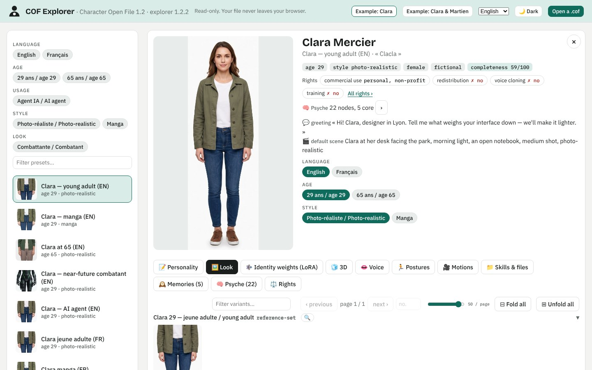

Character Open File
AIキャラクターのすべてを、ひとつのオープンファイルに。持ち運べて、権利もともに運びます。
AIキャラクターのすべてを、ひとつのオープンファイルに。持ち運べて、権利もともに運びます。
AIキャラクターを形づくるすべて、つまり性格、外見、声、3D、モーション、エージェントスキル、記憶、心理を、権利と同意の情報を組み込んだうえでひとつにまとめるオープンなファイルフォーマットです。同じファイルを、チャットアプリ、画像生成ツール、ComfyUI、ゲームエンジン、エージェントで開けます。
現在：1.2.2（2026年11月15日）。ビルダーは自分が扱わない要素もすべて保持し、cof-cliにエージェントホストを追加（ひとつの記憶、ふたつの居場所）、エクスプローラーで日付のない記憶を表示できるようになりました（リリースノート）。これまで：1.2.1（11月8日）Character.AIからのインポート、1.2（11月8日）心理、1.1（10月30日）記憶、1.0（10月17日）。1.xのファイルはすべて有効なまま、1.xのどのツールでも読めます。
ファイルに何が入るか
COFを、Character Card V2とV3 / .charx、エージェント用Markdown、Letta Agent File、MacPaw Portable Memory、VRMと機能ごとに比較します。COFがしないことも含めて。
Character.AIのボットを保存する
COF 1.2.1：キャラクターと、その個人的な記憶としての会話を、ひとつのオープンファイルに。さらに外見、声、プリセット、心理を加えられます。処理はすべてブラウザ内で行われます。
AIキャラクターに内面が宿る
COF 1.2：読んで、編集して、持ち運べる心理。すべての確信が、それを生んだ記憶に結びついています。
人をつくるのに、確信はいくつ必要か
心理学が代わりに数えてきたもの、自分の数値を試せるシミュレーター、そしてBig Five、Myers-Briggsのタイプ、Enneagram、占星術にどれほどの価値があるか。
AIキャラクターに記憶が宿る
COF 1.1：人生の瞬間と期間、そのとき何を感じたか、何を胸にしまっておくか、何が薄れていくか。
ひとつの人生は、どれほどの重さになるのか？
人はいくつの記憶を持っているのか、それは何バイトになるのか、そして仮説を試せる計算機。
1.2.2のために作った2本の短い動画です。実際のファイルと実際のツールを使い、演出はしていません。
ひとつの記憶、ふたつの居場所
ClaraをOpenClawに書き出すと、ファイルが運ぶ記憶をもとに答えます。新しいことを伝えるとエージェントがメモを書き、cof memory addがそれを体験した個人的な記憶としてファイルに戻します。一度も会ったことのないHermesに書き出しても、彼女は今朝の電車のことを覚えています。
彼女は何者か
キャラクターはプロンプト以上のものです。11種類のノードからなり、それぞれが由来する記憶、人物、場所に結びついた彼女の心理を、探索し、時間に沿って再生し、ビルダーで書き、エージェントが読むSOUL.mdに変換します。

マニフェスト付きのZIPアーカイブです。キャラクターのアイデンティティ、8つのカテゴリーに分かれた要素（性格〔内部にCharacter Card V3、心理、自由記述〕、外見、アイデンティティの重み、3D、声、姿勢、モーション、記憶）、エージェント用ファイルのライブラリ、そして権利を収めます。ほとんどの要素は任意で、収めたものは検証されます。

プリセットは、すぐ使える組み合わせです。ひとつの性格、ひとつの外見、ひとつの声、ひとつの年齢。言語や年齢を切り替えると、ほかの要素もそれに合わせて変わります。

人生の瞬間と期間。それぞれに、いつ、どこで、誰と、当時と今どう感じているか、どれほど鮮明に思い出されるか、そしてキャラクターが話したくないことを記録します。ユーザーとともに体験したことは同じファイルに書き戻され、ファイルとともに持ち出されます。詳しく読む。

価値観、信念、欲求、恐れ、傷、好み、習慣を、短いノードのグラフとして表します。各ノードは強さ、期間、由来する記憶を持ちます。人物、場所、物は一度だけ命名し、記憶と心理で共有します。詳しく読む。

許諾、実在の人物を描く場合の同意、出所はファイルの一部です。すべてのプリセットは年齢を宣言します。未成年を含む裸体や親密な内容は、タグが付くだけでなくファイルそのものが無効になります。

キャストはまとめて運ばれ、各キャラクターはそれぞれの外見、声、プリセット、権利を保ちます。

ビルダー、AIエージェント、インポートで作成し、エクスプローラー、ComfyUI、チャットアプリ、エージェントホストで使えます。cof validateは年齢、権利、ハッシュ、スクリプトを検査します。

ビルダー
写真、カード、音声サンプルをドロップすると、.cofができあがります。オフラインで、ブラウザ内で動作します。

エクスプローラー
どの.cofでも開けます。プリセット、外見、声、ポーズ、記憶、心理、権利。閲覧専用です。
CAI ToolsまたはPersonaTextのエクスポートをドロップし、3つの項目を確認して、.cofをひとつダウンロードします。キャラクターと、非公開の記憶として保存された会話が入っています。そこからバックアップ以上のものに育てられます。外見、声、プリセット、心理。処理はすべてブラウザ内で行われます。キャラクターを保存する →
.cofは有効なCharacter Card V3を内包し、ccv3 PNGカード、カードJSON、SOUL.md / IDENTITY.md、OpenClawのワークスペース、Hermesのプロファイルを書き出せます。内部のVRMアバターはそのままのファイルです。既存のツールは何も書き直す必要がありません。ファイルに何が入るか、比較する →